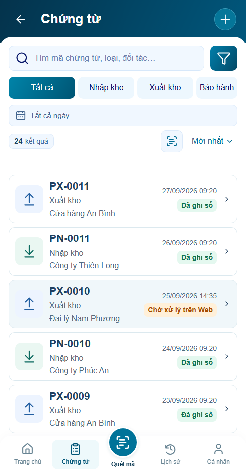
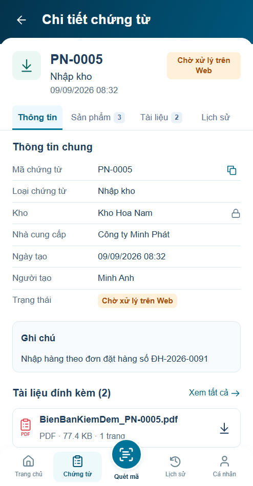
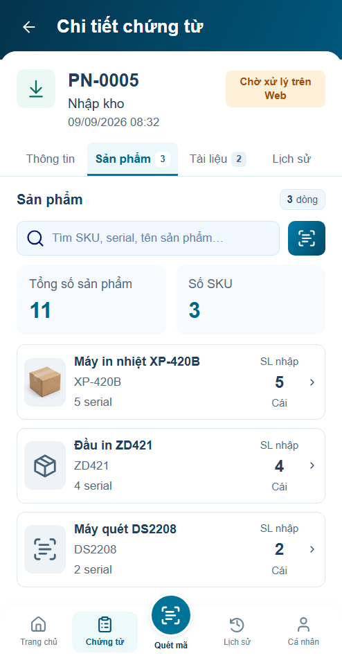

P12.S01



4panel ×3chế độ đạt. Filter140ms, route180ms qua AppShell, chọn hàng160ms, lỗi nhập140ms. Reduced/off giữ đầy đủ thao tác và dữ liệu.
12 ảnh sau settle giống actual trước motion. Ảnh tĩnh không chứng minh chuyển động; xem trace và frame samples.
Báo cáo · Kết quả · Trace auto · Trace reduced · Trace off








35ca logic,27nhóm P12 và36nhóm shell. Visual chờ review; backend/thiết bị thật/60fps chưa nghiệm thu. Không deploy.